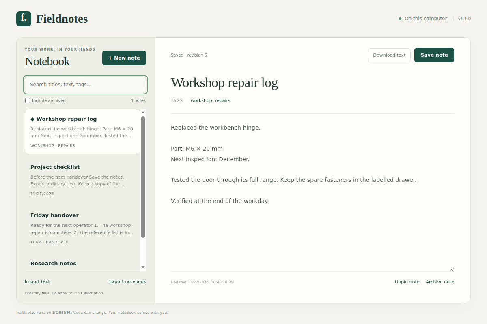

Scripts and data jobs
Run a report, process a dataset or operate a scientific tool. The job retains its output and result after you close the console.
Run your programs on computers you control. Keep the application, its data and a signed operating record you can carry to the next operator. SCHISM gives you local releases, updates, code rollback and handover under your own keys.
Apache-2.0 · Local console + CLI · Windows and Linux qualification
From the June 2026 Darkhive dossier to software you can run.
Fieldnotes is a private, searchable work notebook. Write project notes, keep procedures and export ordinary text. It runs on your computer through SCHISM, with your notes stored on your disk.

The example includes two application versions and a repeatable handover. Create your notes, update the notebook, restore the earlier code, then move the application and data to a fresh operator. Keep the original signed operating record alongside the new one.
Both versions use the same data format. A code rollback keeps your latest notes.
Download and run Fieldnotes ↗Requires Python 3.11 or newer. Sample notes in the image are demonstration data.
Put a small manifest beside your application's files. Declare its command, persistent data format and health check. SCHISM packages, authorizes and runs that program.
Run a report, process a dataset or operate a scientific tool. The job retains its output and result after you close the console.
Run a notebook, an internal tool or an installed model server. Check a replacement release before accepting it, and retain the prior code.
Move an application to a new operator or control an existing POSIX SSH recipient. Each recipient keeps its own identity and authority.
Applications supply their required interpreters, libraries, hardware and external services. Read the application contract ↗
SCHISM began as Jonathan Sandhu's Darkhive Stack Sovereignty Dossier. It credited FleetForge's direction in maintaining software across a growing population of devices, then examined the authority a customer retains when a supplier changes: who approves updates, holds the records and can continue the work.
This release turns that ownership argument into general-purpose application software. You can inspect the source, use it, modify it and redistribute it under Apache-2.0. The public dossier preserves the wider procurement and governance argument; the software establishes its own operating scope.
Original circulated 26 June 2026. Public edition 1.2 published 26 November 2026. Independent work by Jonathan Sandhu.
Extract the whole download and open its launcher. Your operator identity, application data and history live outside the installation, under your own account.
The controller includes its runtime. Open launch-schism.cmd after extracting. Applications such as Fieldnotes also need their declared Python runtime.
Extract the source and open launch-schism.cmd on Windows or run ./launch-schism.sh on Linux. The launcher installs locked, compatible dependencies in an isolated Python environment.
Choose this build only when your system meets its glibc 2.43 baseline. For older distributions, use the source route and qualify it on your machine.
Download Linux ZIP ↓Includes the controller runtime. Apps retain their prerequisites.macOS: source is available; this release has no Mac binary or recorded macOS qualification. Remote control: the SSH adapter targets a POSIX login shell; Windows-to-Linux operation is qualified.
After reboot: services require an explicit start or separately configured OS service supervision. Closing the console leaves detached work running while the machine remains on. Service updates restart the application and introduce downtime.
Linux: the native glibc 2.43 build is newer than the libraries in Ubuntu 24.04 and Debian 13. Source installation uses your Python and compatible locked wheels. Those two distributions have no release qualification recorded here.
Trust: managed applications execute with your OS account's access. Authorize code you trust; the stack provides no hostile-code isolation.
Offline wheels: Windows / CPython 3.13 ↓Offline wheels: Linux / CPython 3.14 ↓Installation and operating details ↗
Source, qualification records, checksums and the earlier continuity experiment remain available together.